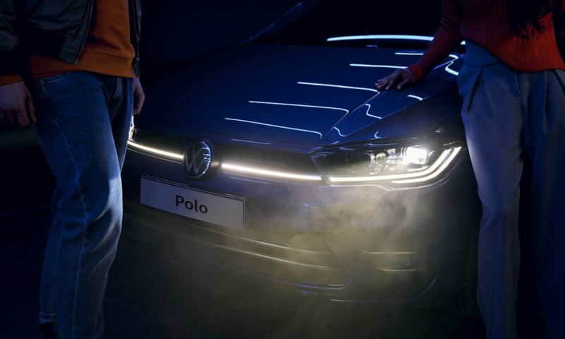
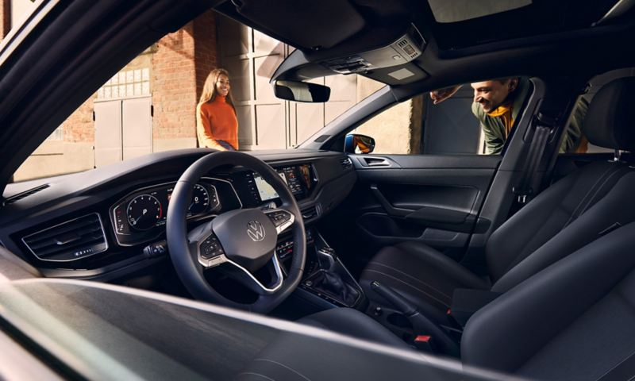

POLO
Polo.Zamansız
Ne kadar dikkatli bakarsanız bakın, bazıları göründüğünden fazlasıdır. Modern dokunuşlarla yeniden yorumlanan kompakt gövdesinin ardında sakladığı geniş iç mekanı ve yükleme kapasitesi, Yarı Otonom Sürüş Asistanı “Travel Assist” ve IQ.LIGHT LED Matrix farlar gibi premium otomobillerde görmeye alışık olduğumuz teknolojileri, hiçbir zaman değişmeyen Volkswagen üretim kalitesi ve sağlamlığıyla Polo, şimdi sizi bekliyor. Arkanıza yaslanın ve kendinizi dijital ve akıllı Polo’ya bırakın. Sayfanın sonuna geldiğinizde siz de Polo ile bizzat tanışmak isteyeceksiniz.
Tasarım

Yapay Zeka İle Geceyi Gündüze Katın
Polo’nun aydınlatma alanında otomotiv endüstrisinin en gelişmiş teknolojik seviyesini ifade eden IQ. LIGHT – LED Matrix farları aktif sürüş güvenliğini en üst düzeyde desteklerken, Polo'nun gece trafiğinde ışıldamasına da katkı sağlar. Sistemi yöneten yapay zeka algoritması ile birbirinden bağımsız olarak açılıp, kapatılabilen ve her bir farın içinde bulunan çok sayıda LED modül, farklı hava ve yol şartlarında en optimum aydınlatmayı garanti altına alır. IQ. LIGHT – LED Matrix farlar, ayrıca düşük enerji tüketimleri ile yakıt ekonomisine de katkıda bulunur.
KONFOR

Geleceğe Bakış
Klasik hız ve devir göstergesinin dışında, navigasyon haritasını, dinlemekte olduğunuz şarkının adını ve yol bilgisayarı verilerini bir arada mı görmek istiyorsunuz? 10,25" Dijital Gösterge Paneli "Digital Cockpit Pro", 10,25” genişliğinde yüksek çözünürlüklü TFT LCD ekranıyla, tüm veri ve bilgileri direkt olarak görüş alanınıza yansıtır. Üstelik tüm bu veri ve bilgilerin nasıl gösterileceğini, kendi zevk ve tercihlerinize göre kişiselleştirebilirsiniz. Böylece hepsi tam istediğiniz gibi ve tam anlamıyla gözünüzün önünde olur.
Teknoloji

7 ileri Çift Kavramalı Şanzıman "DSG".
Konvansiyonel otomatik vites sistemlerinin yüksek yakıt tüketimi, yüksek ağırlık, düşük performans ve yüksek emisyon değerlerinden ibaret olan tüm kötü yönlerini ortadan kaldıran bu kompakt ve hafif şanzıman sistemi ile Polo, manuel vitesli modellerden bile daha yüksek performanslı, daha düşük yakıt tüketimine sahip ve daha çevreci. Üstün mekatronik sistemi sayesinde Çift Kavramalı Şanzıman "DSG", adeta ışık hızında bir üst vitese geçer ve bu sayede diğer otomatik şanzımanlarda karşılaşılabilen sarsıntı, hızlanmada kesinti ve güç kaybının tamamen önüne geçer. Volkswagen'in motor sporlarında elde ettiği deneyimin bu mühendislik harikası ürünü, etkili performans, düşük yakıt tüketimi ve üstün sürüş keyfi için hizmetinizde.
Güvenlik

Her zaman doğru yolda kalın.
Polo'nun Yarı Otonom Sürüş Asistanı "Travel Assist", sistemin içeriğinde barındırdığı radar, sensör ve kameralar yardımıyla şerit çizgilerini takip eder, fren ve gaz kararlarını otonom bir şekilde vererek önünde seyreden araç ile takip mesafesini koruyabilir ve gerektiğinde kontrollü bir şekilde şerit değiştirebilir.¹
Volkswagen Hakkında Modeller Ve Fiyatlar İletişim Sosyal Medya
İkinci El Araçlar Tüm Modeller Yetkili Satıcı Facebook
Ticari Araçlar SUV Modeller Online Servis Instagram
Satış Sonrası Hizmetler Araç Fiyatları İletişim Ve Destek Twitter
Kampanyalar Aksesuarlar Bilgi Formu Youtube
|